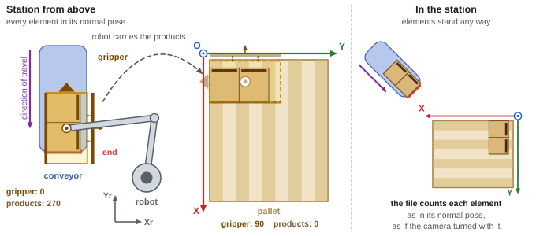
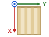
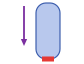
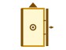
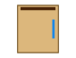
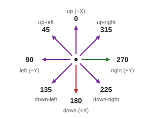

Station layout and directions
OpenPallet 1.2Every element of the station has its own frame and normal pose. The file gives orientations and positions relative to the normal pose: of the conveyor at the pick, of the pallet at the place, however they stand in the station. Pallet frame: X down the drawing along the length (pallet.length), Y to the right along the width (pallet.width), Z up.

| Symbol | Element |
|---|---|
 |
Robot. The integrator sets its frame (Xr, Yr). The robot program places the pallet and the conveyor in it. |
 |
Pallet. Origin O in a corner, X along the length (also when the pallet is wider than long), Y along the width, Z up from the deck boards. |
 |
Conveyor. Travel down the drawing, the conveyor end (red line) at the bottom. |
 |
Gripper at orientation 0. Triangle: the front. Dark bars: sides 90 and 270. Circle: the robot's flange. |
 |
Product at orientation 0. Dark bar: face 0 (the front). Blue bar: the label. |

| Direction | On the drawing | Vector (X, Y) |
|---|---|---|
| 0 | up | (−1, 0) |
| 45 | up-left | (−1, −1) |
| 90 | left | (0, −1) |
| 135 | down-left | (+1, −1) |
| 180 | down | (+1, 0) |
| 225 | down-right | (+1, +1) |
| 270 | right | (0, +1) |
| 315 | up-right | (−1, +1) |
| 900 | straight down | (0, 0) |
- Orientation (0, 90, 180, 270): the side the front of an element faces. 0 is the normal pose: the product stands as it reaches the conveyor end without being turned, the gripper as it picks most often.
- The file gives only orientations. How to turn the gripper to reach them safely is the robot program's decision.
- Direction (compass): the placing direction of the products, in the pallet frame. 900 = neutral: straight down (card 5), no open side and centre (card 4). 999 = not assigned.
- Move (
moves[]): the products the gripper picks and places at once. Z counts from the pallet's deck boards (card 6).